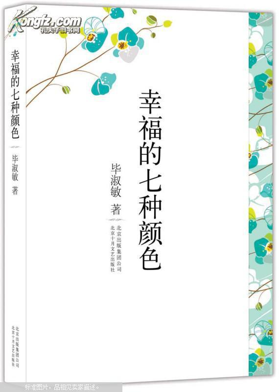

| 书名 | 幸福的七种颜色 |
| 作者 | 毕淑敏 |
| 类别 | 文学、散文、随笔 |
| 标签 | 于寻常中见深刻哲理 |
| 页数 | 206 |
| 字数 | 161000 |
| 出版社 | 北京出版集团公司等 |
| 出版时间 | 2010/09/01 |
作品简介
《幸福的七种颜色》为毕淑敏的散文作品选集之一。王蒙说：“毕淑敏有一种把对于人的关怀和热情悲悯，化为冷静的处分的集道德、文学、科学为一体的思维写作方式与行为方式。”毕淑敏是作家，又是医生，一直攻读心理学博士，又由于她有在“世界屋脊”特殊的生活经历，使得她的散文有着极强的现代意识和专业的心理分析，特别是这部散文新作中的部分心理散文，贯注着一个心理医生充满洞察力和稳定感的目光。书中贯穿着作者对社会上各种“病人”、“病情”的看法与治疗方案，细腻的笔墨刻画出一位心理学家同时又是一位长者对人生中许多现实问题的看法，给以读者心理的洗涤和净化。 本书收录著名女作家毕淑敏散文精品新作，她的散文于寻常中见深刻哲理，语言朴实生动，记录了她探索人生的心理历程。
目 录
- 【提醒幸福】
- 【幸福的镜片】
- 【家庭幸福预报】
- 【幸福盲】
- 【“我羡慕你”】
- 【比会见总统更重要的事】
- 【优点零】
- 【毕淑敏母子环球百日游】
- 【轰毁你心中的魔床】
- 【自拔】
- 【千头万绪是多少】
- ……
- 【你是否需要预知今生的苦难】
- 【忍受快乐】
作者简介
毕淑敏，国家一级作家，心理学家。北京作家协会副主席，中国作家协会第五届、第六届、第七届全国委员。女，汉族，祖籍山东文登，1952年10月生于新疆伊宁。1969年当兵，任西藏阿里军分区卫生员、助理军医、军医。1980年转业回北京，任内科主治医师，卫生所所长。1987年发表处女作《昆仑殇》。 1991年获文学硕士学位。2002年北京师范大学心理学硕士、博士方向课程结业。